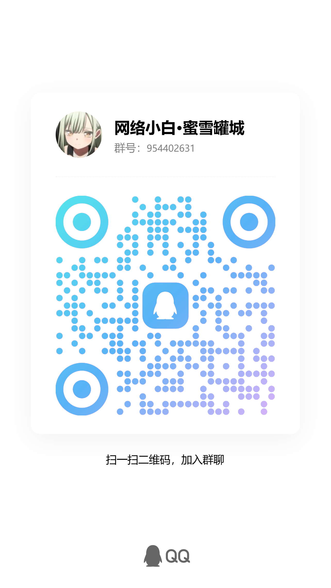

基于 LLM Agent + MCP 工具链 + 渗透 Skill
描述目标，自动完成「信息收集 → 漏洞发现 → 漏洞利用 → 报告生成」
VulnClaw 的首份实战报告，仅 12 轮对话找到 flag，见证 AI 渗透测试全流程
开箱即用，让每一次渗透都有章可循
用日常语言描述渗透意图，AI 自动识别阶段、选择工具、编排测试流程。
12 个安全 MCP 服务 + 23 个工具定义，开箱即用。
7 个核心 Skill 覆盖全流程，14 个专项 Skill 深入各场景。
持续性渗透测试 + 推理可视化 + Python 代码执行。
四步上手，3 分钟开始第一次渗透测试
LLM Agent 驱动的多轮渗透循环，发现即利用，利用即报告
端口扫描、指纹识别
目录枚举、指纹分析
CVE 匹配、Web 漏洞
配置缺陷、逻辑漏洞
PoC 构造、WAF 绕过
命令执行、权限获取
内网探测、横向移动
凭据窃取、权限维持
Markdown 结构化报告
修复建议、风险评级
Python PoC 脚本
可复现漏洞验证
兼容所有 OpenAI 协议模型，集成主流安全工具
开源免费，MIT 许可证。立即安装，体验 AI 渗透测试。
数据驱动，见证成长
与更多安全爱好者一起交流、分享与成长
欢迎加入讨论分享，获取最新产品动态与使用技巧

加入我们，参与开源贡献与技术深度探讨